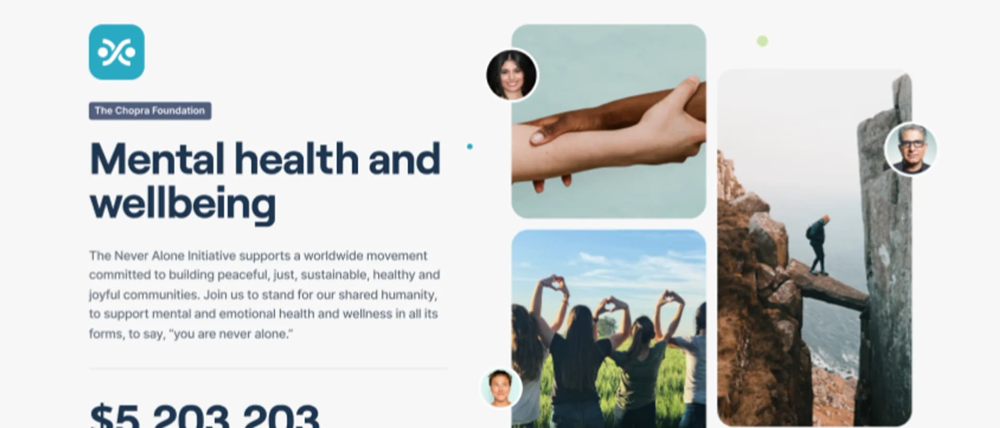

Earth Fund:
DAO Infrastructure for Philanthropy
A blockchain-based philanthropy platform enabling anyone to create and fund cause-driven DAOs — with automated donation routing, token exchange, and on-chain governance built end-to-end by Axiom Chain.
Stack
Solidity, React, Chainlink, Gnosis Safe
Role
Smart Contract & Web3 Integration Partner
Scope
Contracts, Web3 Frontend, Infrastructure
The Mission
“To democratise philanthropy by providing a decentralised platform where anyone can create, fund, and govern causes — removing intermediaries and giving communities direct control over charitable funds.”
Core Objectives
- Turnkey DAO infrastructure for charitable causes
- Automated donation routing with ERC-20 support and keeper-based fund splitting
- Bidirectional token exchange between parent and child DAO tokens
- Usable by non-crypto-native cause creators and donors
The Challenge
No existing platform combined token creation, treasury management, governance, and donation routing into a single automated DAO workflow. Earth Fund's tokenomics involved five interlocking components — a parent token (1Earth), child DAO tokens, a clearinghouse, a rewards distributor, and a donation router — each needing to compose seamlessly while staying gas-efficient and auditable.
The DAO Factory needed to atomically deploy an ERC20 token, a Gnosis Safe, an ENS subdomain, and a Chainlink Keeper in a single front-end transaction. High-profile cause launches (Deepak Chopra's "Never Alone" mental health initiative, a Carbon Capture cause) ran concurrently with platform development, demanding reliability under real-world conditions across a multi-phase engagement.
What We Built
Governor Contract (DAO Factory)
Atomic creation of child DAOs — deploying an ERC20 token, assigning a Gnosis Safe, registering an ENS subdomain, and setting up a Chainlink Keeper from a single user interaction.
Clearinghouse & Resale Queue
Bidirectional token exchange between 1Earth and child DAO tokens, upgraded with a FIFO-ordered DaoResaleQueue enabling gas-efficient secondary market sales without an AMM pool.
Donation Router
Accepts arbitrary ERC-20 donations, swaps to USDT via Matcha/0x, and uses Chainlink Keepers to split and route funds to DAO treasuries, the Earth Fund treasury, and the rewards distributor.
Rewards Distributor & Web3 Integrations
On-chain rewards distribution to DAO voters with multi-proof claim-all support, plus full wallet connection, donation flows, token exchange UI, and governance interactions in the front-end application.
Technical Architecture
Smart contracts deployed on Ethereum mainnet using a modular architecture — Governor, Clearinghouse, Donation Router, and Rewards Distributor each operate independently but compose into the full DAO lifecycle. Chainlink Keepers automate fund routing and upkeep registration; ENS provides human-readable DAO addressing. A phased engagement covered PoC, MVP, and full platform across 2022 onward.
Real Impact.
Earth Fund's decentralised philanthropy platform empowers anyone to create cause-driven DAOs with automated donation routing, token exchange, and on-chain governance — all composed from five core smart contract components on Ethereum mainnet.
- Core Components
- 5
- Partnership
- Multi-Year
- Automation
- Chainlink
- Mainnet
- Ethereum
- Region
- Global
